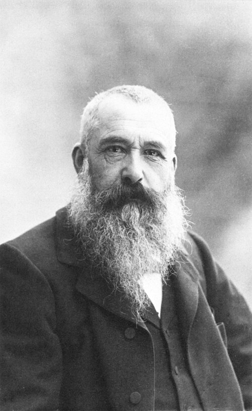
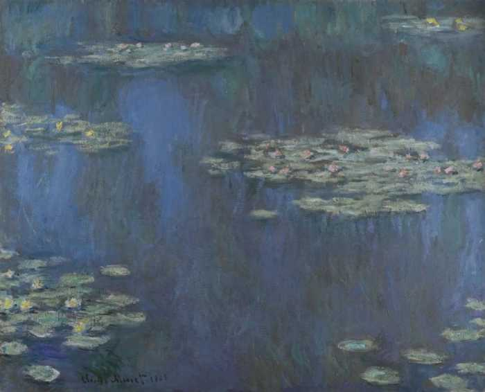
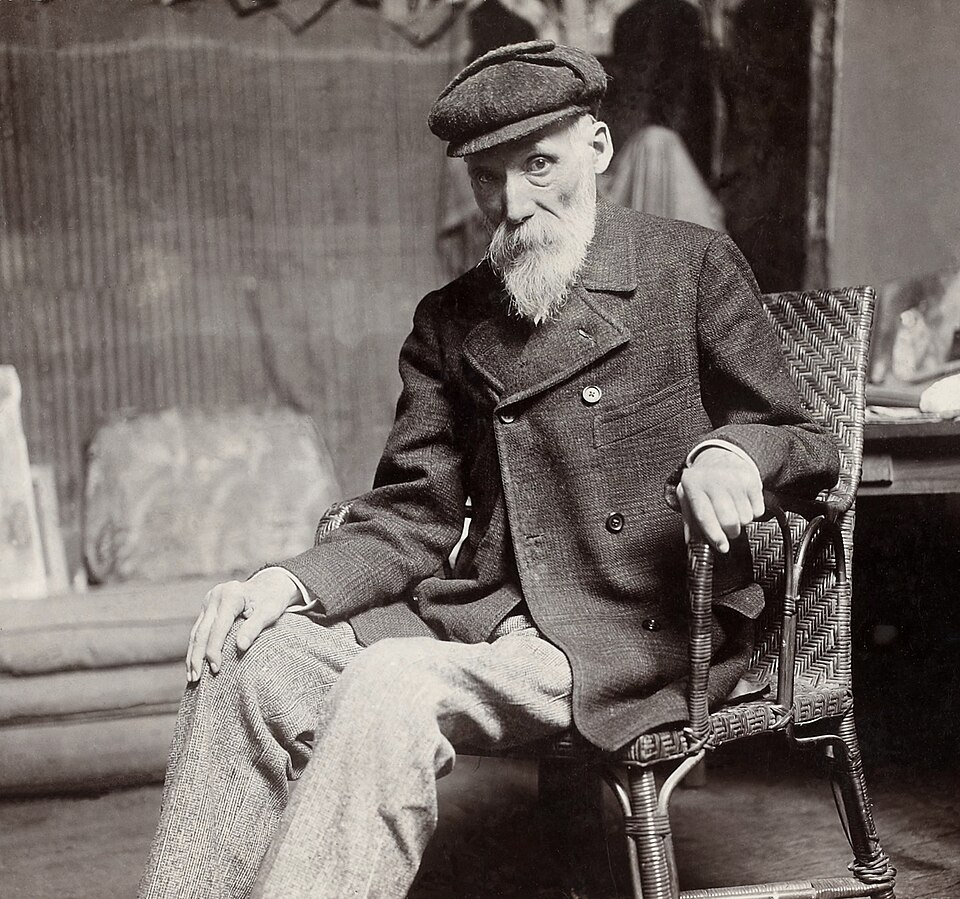
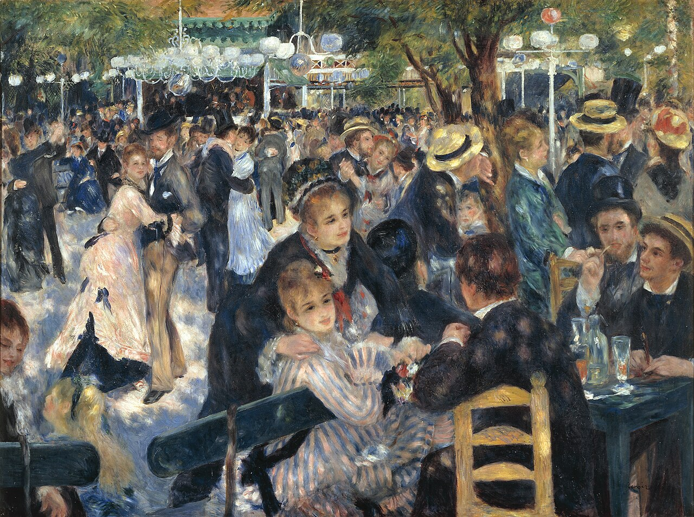
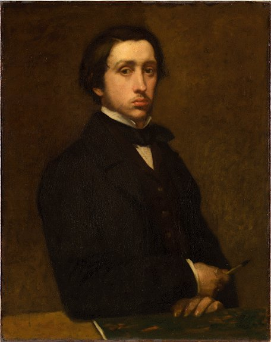
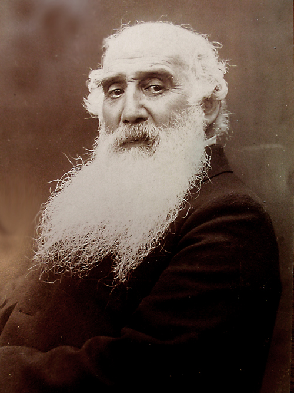
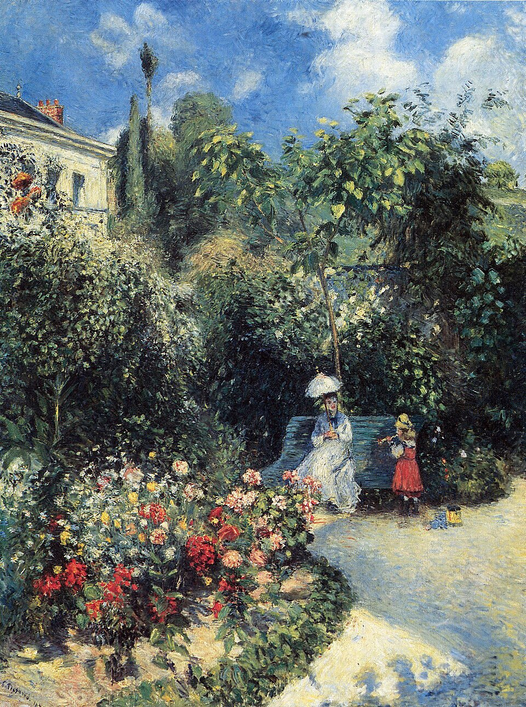
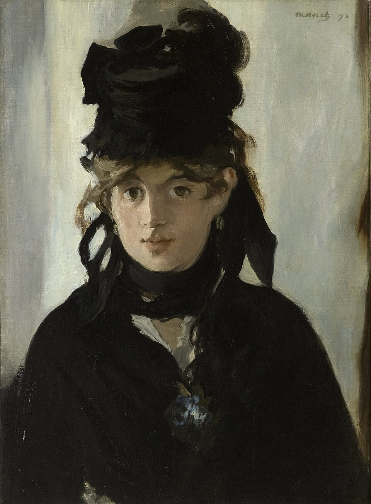

Известные представители импрессионизма
-
Клод Моне — основоположник и икона движения. Его картина «Впечатление. Восход солнца» дала название всему течению. Известен своими сериями, например, «Кувшинки» и «Руанский собор».


-
Пьер-Огюст Ренуар — мастер жизнерадостных сюжетов. Прославился как автор портретов и многофигурных городских сцен («Бал в Мулен де ла Галетт»).


-
Эдгар Дега — гений движения. Обожал писать балерин, скаковые лошадей и сцены из жизни парижских кафе («Голубые танцовщицы»).


-
Камиль Писсарро — «патриарх» импрессионизма. Наставник многих молодых художников, мастер сельского и городского пейзажа.(«Фруктовый сад в Понтуазе»)


-
Берта Моризо — ключевая женщина-художница в группе, мастерски передававшая домашние и семейные сцены.(«Летний день»)


Главная